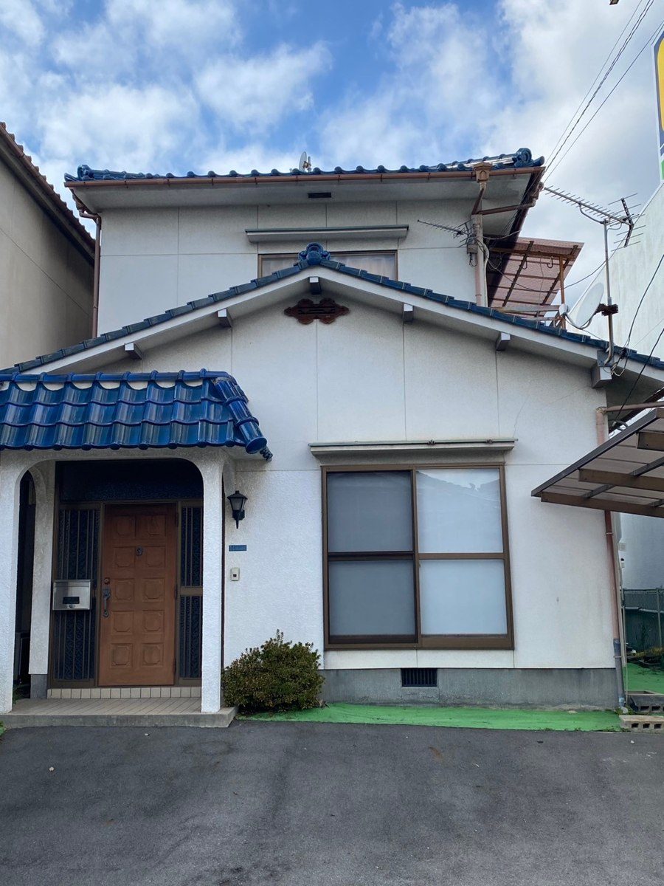

放課後等デイサービス ここふる三原校

自立へ向けた色々な学習体験が出来る皆の居場所
施設概要
対象年齢
小学1年生～高校3年生
定員
10名
開所時間
平日：放課後～18:00
土・祝・長期休暇：9:00～16:00
療育内容
5領域とのつながりを大切にしながら、自立に向けた職業訓練や外出活動などを組み込み、日々の療育を行います。
健康・生活
日々の体調管理に留意しながら、整容や身辺の事などについて自分のペースで自立していけるよう、スモールステップで達成感を味わえるよう配慮しながら場面を設定します。
運動・感覚
一人一人に合った運動プログラムをもとに、運動を通しての集団遊び、や、遊びの中でさまざまな感覚に刺激を与え、感覚統合の為の取り組みなど、「楽しく」取り組めることを基本に、公園や戸外遊びにも出かけながら取り組みます。
認知・行動
苦手な感覚や、好きな感触など、個性に寄り添って把握し、遊びや活動の中で、繰り返しスモールステップで感覚を認識することで、苦手な事であっても少しずつできることが増えて成長できる様見守ります。
言語・コミュニケーション
個別または小集団での障害の特性に応じた読み書きに取り組み、日々の活動の中でも円滑なコミュニケーションを学べるよう、集団での活動や遊びのプログラムを取り入れ、楽しみながら自然に身に付くような取り組みを行い見守ります。
人間関係・社会性
外食活動や、公共交通機関を使用した外出活動などを通して、子どもたちの思い出に残るような体験とともに、社会でのルールやマナーが身に付くような機会を設けます。また、スタッフとの信頼関係の元、他児との関りが楽しいものになるよう、一人一人の個性に沿ったゲームや活動などのプログラムを作成し、日々の療育に組み込んでいきます。
特別活動について
☆夏祭りやハロウィンなどの行事を通しての地域との関りや、電車での外出活動や外食活動など、楽しみながらルールやマナーを学べる社会活動もプログラムの中に入れるなど、多種多様な取り組むを行っています。
※その他にも、様々な療育メニューをご用意しております。
◇療育プログラムは、五領域を基本としながら「療育内容の質と幅」「個別性」「児童の安全・心地よさ」を追求します。
1日のスケジュール
| 平日 | 土・祝・春夏冬長期休み |
|---|---|
◇学習・訓練・仲間との関わり等、 |
◇休日でも生活リズムを崩さない。 |
アクセス
住所
〒723-0051
広島県三原市宮浦3丁目1―14
電話番号
070-5303-6227
最寄り駅
三原駅駅 徒歩１５分
CONTACT
見学・ご利用のご相談
ここふる三原校について、ご質問や見学のご相談はお気軽にお問い合わせください。